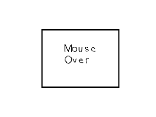
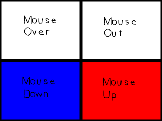

Mouse Events

Last Updated 2/23/14
Time to learn to handle events from the mouse. This is a simple tutorial that will teach you to handle various mouse events to make a simple button.A Mouse events tutorial with SDL 2 is now available.
//The button
class Button
{
private:
//The attributes of the button
SDL_Rect box;
//The part of the button sprite sheet that will be shown
SDL_Rect* clip;
public:
//Initialize the variables
Button( int x, int y, int w, int h );
//Handles events and set the button's sprite region
void handle_events();
//Shows the button on the screen
void show();
};
Here's the Button class which we're going to interact with.
We have a rectangle to define the position and dimensions of the Button. We also have a pointer to the sprite from the sprite sheet being used by the Button.
Then we have the constructor that sets the Button according to the attributes given in the arguments. Then we have our handle_events() function which handles mouse motion and mouse button events.
Then there's show() function which shows the button on the screen.
We have a rectangle to define the position and dimensions of the Button. We also have a pointer to the sprite from the sprite sheet being used by the Button.
Then we have the constructor that sets the Button according to the attributes given in the arguments. Then we have our handle_events() function which handles mouse motion and mouse button events.
Then there's show() function which shows the button on the screen.
void set_clips()
{
//Clip the sprite sheet
clips[ CLIP_MOUSEOVER ].x = 0;
clips[ CLIP_MOUSEOVER ].y = 0;
clips[ CLIP_MOUSEOVER ].w = 320;
clips[ CLIP_MOUSEOVER ].h = 240;
clips[ CLIP_MOUSEOUT ].x = 320;
clips[ CLIP_MOUSEOUT ].y = 0;
clips[ CLIP_MOUSEOUT ].w = 320;
clips[ CLIP_MOUSEOUT ].h = 240;
clips[ CLIP_MOUSEDOWN ].x = 0;
clips[ CLIP_MOUSEDOWN ].y = 240;
clips[ CLIP_MOUSEDOWN ].w = 320;
clips[ CLIP_MOUSEDOWN ].h = 240;
clips[ CLIP_MOUSEUP ].x = 320;
clips[ CLIP_MOUSEUP ].y = 240;
clips[ CLIP_MOUSEUP ].w = 320;
clips[ CLIP_MOUSEUP ].h = 240;
}
Here's our function that clips the images from our sprite sheet:

As you can see we have a sprite for the various mouse events. So we have an array of four SDL_Rects that clip each
button sprite. Each button sprite has a constant associated with it.
Button::Button( int x, int y, int w, int h )
{
//Set the button's attributes
box.x = x;
box.y = y;
box.w = w;
box.h = h;
//Set the default sprite
clip = &clips[ CLIP_MOUSEOUT ];
}
The constructor for the Button class is pretty straight forward.
It sets the x and y offsets of the button along with its width and height.
It also sets the default sprite from the sprite sheet.
It also sets the default sprite from the sprite sheet.
void Button::handle_events()
{
//The mouse offsets
int x = 0, y = 0;
//If the mouse moved
if( event.type == SDL_MOUSEMOTION )
{
//Get the mouse offsets
x = event.motion.x;
y = event.motion.y;
//If the mouse is over the button
if( ( x > box.x ) && ( x < box.x + box.w ) && ( y > box.y ) && ( y < box.y + box.h ) )
{
//Set the button sprite
clip = &clips[ CLIP_MOUSEOVER ];
}
//If not
else
{
//Set the button sprite
clip = &clips[ CLIP_MOUSEOUT ];
}
}
In the event handler, the first thing we check is if the mouse moved.
When the mouse moves, a SDL_MOUSEMOTION event occurs.
If the mouse was moved, we get the mouse offsets from the event structure, then check if the mouse is over the Button. If the mouse is over the Button, we set the Button's sprite to be the mouse over sprite, otherwise it is set to the mouse out sprite.
If the mouse was moved, we get the mouse offsets from the event structure, then check if the mouse is over the Button. If the mouse is over the Button, we set the Button's sprite to be the mouse over sprite, otherwise it is set to the mouse out sprite.
//If a mouse button was pressed
if( event.type == SDL_MOUSEBUTTONDOWN )
{
//If the left mouse button was pressed
if( event.button.button == SDL_BUTTON_LEFT )
{
//Get the mouse offsets
x = event.button.x;
y = event.button.y;
//If the mouse is over the button
if( ( x > box.x ) && ( x < box.x + box.w ) && ( y > box.y ) && ( y < box.y + box.h ) )
{
//Set the button sprite
clip = &clips[ CLIP_MOUSEDOWN ];
}
}
}
Then we check if a mouse button was pressed.
When a mouse button is pressed, a SDL_MOUSEBUTTONDOWN event occurs.
We only want the button to react to the left mouse button, so we check if the left mouse button was pressed.
Then we check if the mouse button was pressed over the Button. If it was we set the Button's sprite to be the mouse down sprite.
We only want the button to react to the left mouse button, so we check if the left mouse button was pressed.
Then we check if the mouse button was pressed over the Button. If it was we set the Button's sprite to be the mouse down sprite.
//If a mouse button was released
if( event.type == SDL_MOUSEBUTTONUP )
{
//If the left mouse button was released
if( event.button.button == SDL_BUTTON_LEFT )
{
//Get the mouse offsets
x = event.button.x;
y = event.button.y;
//If the mouse is over the button
if( ( x > box.x ) && ( x < box.x + box.w ) && ( y > box.y ) && ( y < box.y + box.h ) )
{
//Set the button sprite
clip = &clips[ CLIP_MOUSEUP ];
}
}
}
}
Then we check if the mouse button was released over the button with a SDL_MOUSEBUTTONUP event.
In this program we got the mouse offsets by getting them from the event structure. It would have been more efficient to get the mouse offsets via SDL_GetMouseState(), but.... eh I'm too lazy to go back and change the code.
In this program we got the mouse offsets by getting them from the event structure. It would have been more efficient to get the mouse offsets via SDL_GetMouseState(), but.... eh I'm too lazy to go back and change the code.
void Button::show()
{
//Show the button
apply_surface( box.x, box.y, buttonSheet, screen, clip );
}
Then in the show function we show the button's sprite on the screen.
//Clip the sprite sheet
set_clips();
//Make the button
Button myButton( 170, 120, 320, 240 );
At the top of the main() function after we've initialized and loaded everything,
we set clip the sprite sheet and set our button.
//While the user hasn't quit
while( quit == false )
{
//If there's events to handle
if( SDL_PollEvent( &event ) )
{
//Handle button events
myButton.handle_events();
//If the user has Xed out the window
if( event.type == SDL_QUIT )
{
//Quit the program
quit = true;
}
}
//Fill the screen white
SDL_FillRect( screen, &screen->clip_rect, SDL_MapRGB( screen->format, 0xFF, 0xFF, 0xFF ) );
//Show the button
myButton.show();
//Update the screen
if( SDL_Flip( screen ) == -1 )
{
return 1;
}
}
Here's the button class in action inside our main loop.
First we handle events. As you can see we use Button's event handler and we also check for a user quit.
Typically a while loop is used to handle events but in this tutorial (and the previous one) we used "if". This is so one event is handled per frame and it's easier to see the individual events. In most real applications you use "while" because you want to handle all events on queue every frame.
After the event is handled, we clear the screen by filling it white. Then we show the button on the screen and update the screen.
Then the main loop continues so we can render another frame until the user quits.
First we handle events. As you can see we use Button's event handler and we also check for a user quit.
Typically a while loop is used to handle events but in this tutorial (and the previous one) we used "if". This is so one event is handled per frame and it's easier to see the individual events. In most real applications you use "while" because you want to handle all events on queue every frame.
After the event is handled, we clear the screen by filling it white. Then we show the button on the screen and update the screen.
Then the main loop continues so we can render another frame until the user quits.
For those of you on faster computers you may not see the CLIP_MOUSEUP sprite. This is because the program runs so
fast it only shows up for a split second. Fortunately there's a set of tutorials dealing with timing and
regulating frame rate coming up. If you slow the program down to 20 frames per second you should at least be able
to notice it.